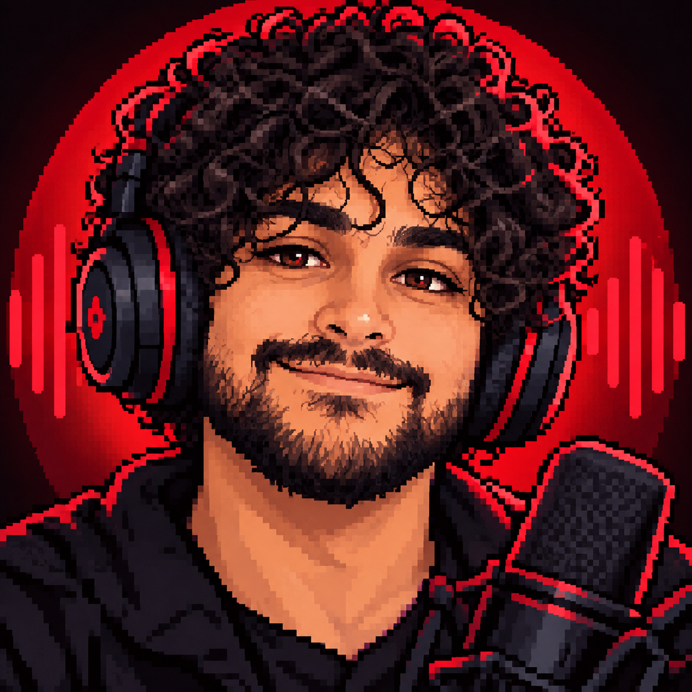

kuroko_w.exe

Kuroko_W
Uriel Pérez Ochoa · voice over · español mexicano / latinoamericano
contactar escuchar demodemo.wav
contacto.txt
trabajos/
setup.ini
redes.lnk

Uriel Pérez Ochoa · voice over · español mexicano / latinoamericano
contactar escuchar demo